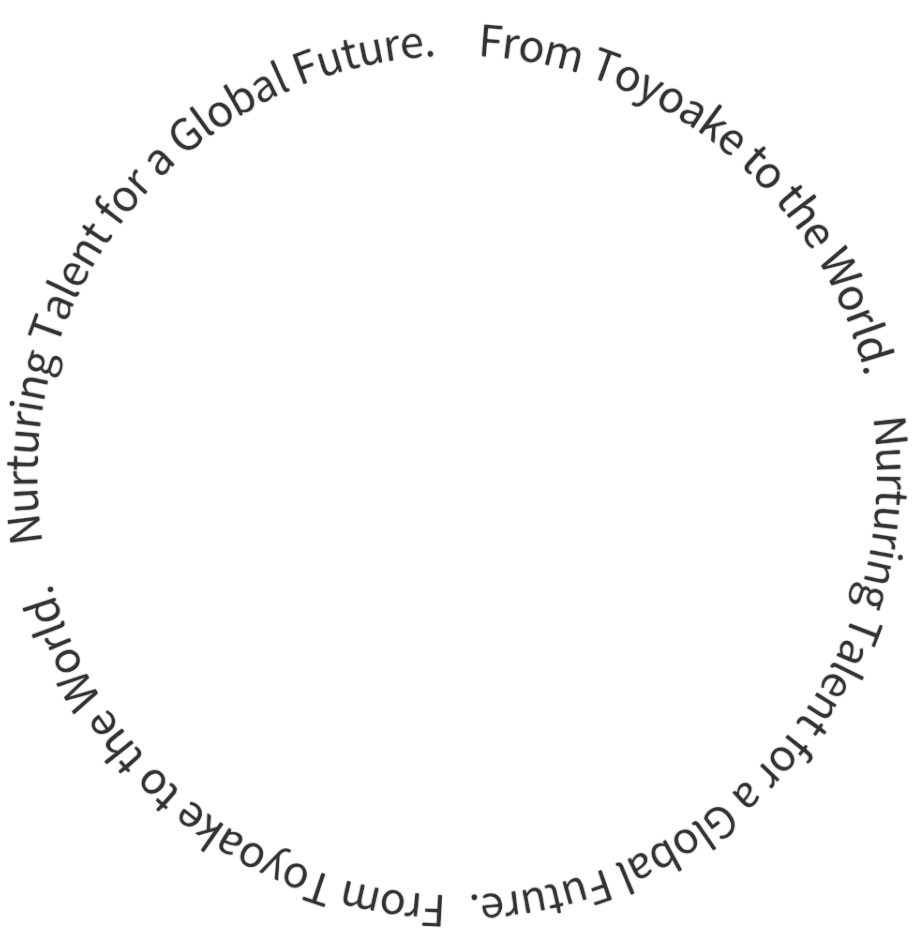
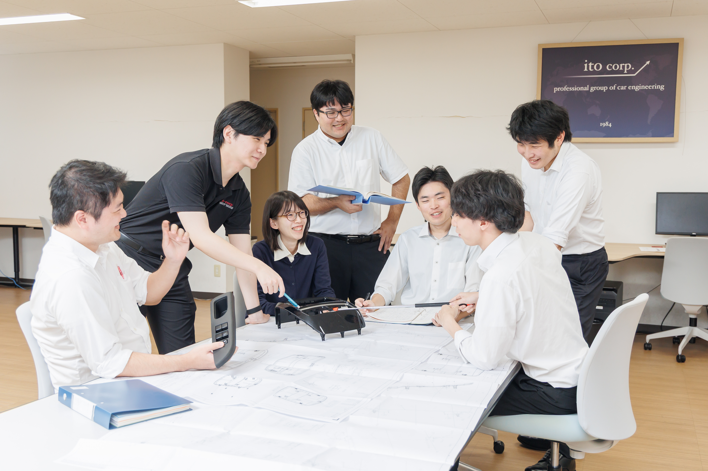
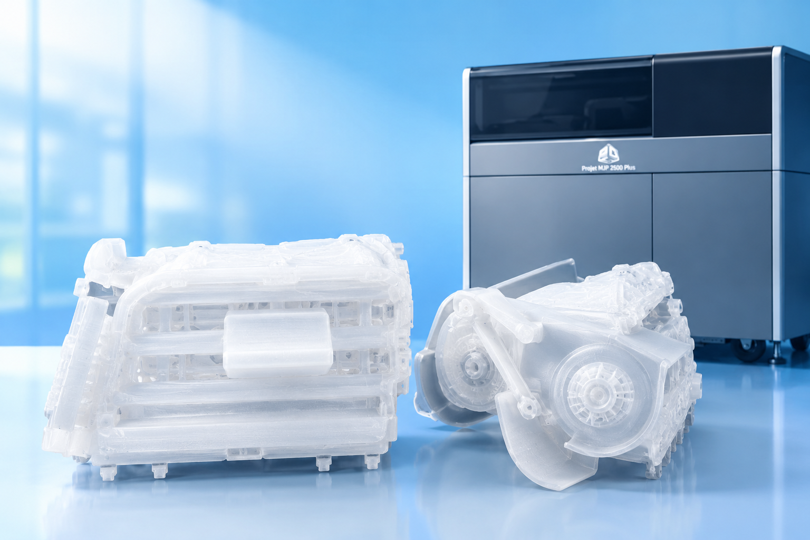

会社概要About Us
愛知県豊明市で創業し、40年以上にわたり自動車業界とともに歩んできたアイティーオー。培ってきた経験と信頼を礎に、新たな技術や価値の創出に挑戦し続けています。豊明から世界へ、さらなる可能性を追求します。

Message
私たちアイティーオーは、設計を通じて自動車開発を推進しています。お客様の要望に応えるために、自ら考え、試し、周囲と相談しながら、より良い答えを追求すること。それが私たちの仕事です。
だからこそ、社員一人ひとりが仕事に向き合い、それぞれの経験を積み重ねながら、自分の力を伸ばしていける環境を大切にしています。設計者としての成長を、会社として支えていきます。

愛知県豊明市で創業し、40年以上にわたり自動車業界とともに歩んできたアイティーオー。培ってきた経験と信頼を礎に、新たな技術や価値の創出に挑戦し続けています。豊明から世界へ、さらなる可能性を追求します。
入社後は約3か月間の研修で、ビジネスマナーやコミュニケーション、製図、3D-CAD、樹脂材料、金型など、設計に必要な基礎知識を幅広く学びます。文系・未経験でも、一人ひとりのペースに合わせて基礎から学べる環境を整えています。

高精度な3Dプリント技術を活用し、樹脂部品の試作から機構品の確認まで、設計の専門知識を活かして幅広くサポートしています。
最初は図面の見方も分からず苦労しましたが、先輩に教えてもらいながら一つずつ覚えてきました。自分で考えて設計したものが形になったときは、本当にうれしいです。これからもできることを増やしたいです。
技術部 A
大学では文系を専攻していたため、入社当初はCADも設計も初めてでした。研修で基礎から学び、今では少しずつ任される仕事も増えています。知識ゼロからでも挑戦できる環境だと感じています。
技術部 B
分からないことをそのままにせず、周りに相談しながら仕事を進めています。先輩や同僚との距離が近く、ちょっとした疑問も聞きやすいのがありがたいです。少しずつ自分で判断できることが増えてきました。
技術部 C
です]設計の仕事は、CADに向かうだけではありません。お客様や社内のメンバーと相談しながら、一つの製品をつくり上げていきます。技術力だけでなく、相手の意図をくみ取る力も身についたと感じています。
技術部 D
長く自動車部品の設計に携わってきましたが、毎回新しい発見があります。これまで培ってきた経験を若手に伝えながら、自分自身も新しい技術を学ぶ。そんな環境で長く設計の仕事を続けられることが魅力です。
技術部 E